Module 12 – Maintenance d’un système en production
Objectifs
• Analyser le système • Gérer les journaux • Planifier des tâches • Gérer les fichiers de logs
Analyser le système
• Il est important d’analyser son système d’exploitation pour vérifier que tout fonctionne correctement. Il y a des deux types d’outils permettant cette analyse : les outils proactifs et réactifs.
• Afin d’analyser facilement son système, il est utile de lire les journaux du système (les logs).
• Afin de préserver un bon fonctionnement, il est utile d’automatiser des tâches administratives.
• Enfin, il est important de connaître des commandes de prise d’informations du système, la RAM, le CPU, les processus, etc.
Nécessité d’analyser son système
Journald au travers de Systemd
La gestion des journaux applicatifs est gérée sous Debian 9 par deux services :
- Journald au travers de systemd
- L’ancien système rsyslog au travers de journald
• Tous les services, programmes, tâches gérées par systemd ont leurs comportements remontés dans journald.
• Le fait d’exécuter la commande systemctl status [daemon] affiche le statut du service mais aussi les logs de l’application.
• Ces logs sont enregistrés dans une base de données gérée par journald.
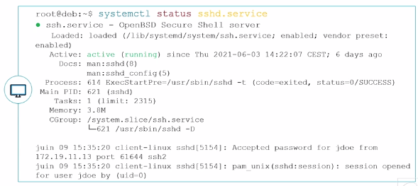
La commande Journalctl
Regarder les logs complets de chaque service
• Puisque journald stocke les informations dans une base de données, il est possible de regarder les logs complets de chaque service via la commande
journalctl.
• Le fichier de configuration de journald est /etc/systemd/journald.
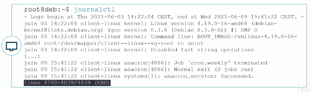
Visualiser les logs en temps réel
Il est possible de visualiser les logs en temps réel avec l’option -f
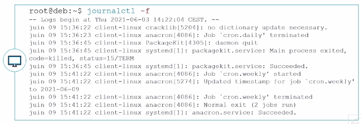
Voir les logs d’un service donné
journalctl -u [service]
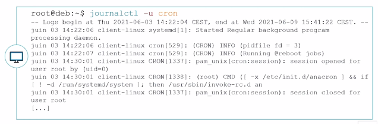
Voir les logs d’un PID donné
journalctl _PID=[n° pid]
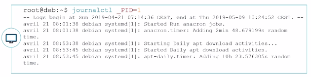
Voir les logs d’un programme
journalctl /usr/bin/sshd
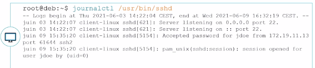
Voir les logs par niveau de priorité
journalctl –p <level>
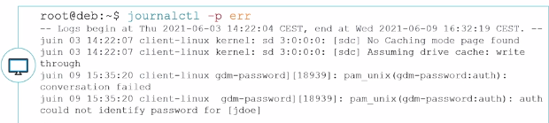
Les différents niveaux de priorités sont du plus critique au plus informatif : emerg, alert, crit, err, warning, notice,
info, debug.
Cumuler les options
Il est possible de cumuler les options, par exemple :
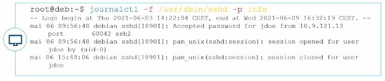
Maintenance d'un système en production
rsyslog à travers Journald
Généralité
• Journald a certes l’avantage de stocker les logs dans une base de données mais ces logs sont uniquement conservés pour le démarrage en cours.
• Pour conserver les logs, Debian utilise rsyslog.
• Tous les logs de journalctl sont transférés à rsyslog.
Principe de fonctionnement
• rsyslog travaille sur des « facilities » et des niveaux de priorités qui déclenchent une action.
• Les facilities les plus courantes sont :
• auth : utilisée pour des évènements concernant la sécurité ou l'authentification à travers des applications d'accès (type SSH)
• authpriv : utilisée pour les messages relatifs au contrôle d'accès
• daemon : utilisée par les différents processus systèmes et d'application
• kern : utilisée pour les messages concernant le noyau
• mail : utilisée pour les évènements des services mail
• user : facility par défaut quand aucune n'est spécifiée
• local0 à local7 : utilisées pour les messages de différents programmes
• * : désigne toutes les facilities
• none : désigne aucune facility
Les différents niveaux de priorité sont :
• emerg : urgence, système inutilisable
• alert : alerte, intervention immédiate nécessaire
• crit : erreur système critique
• err : erreur de fonctionnement
• warning : avertissement
• notice : évènements normaux devant être signalés
• info : pour information
• debug : message de débogage
• Les actions correspondent généralement à l’écriture du journal dans un fichier, mais il est possible de configurer rsyslog pour qu’il envoie les messages à enregistrer vers un autre serveur rsyslog.
• Exemple de configuration des règles dans le fichier /etc/rsyslog.conf :
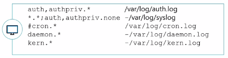
• Le « - » devant certains chemins indique que l’enregistrement des logs est asynchrone (infos mises en mémoire avant d'être synchronisées avec le système).
Commande d'interaction
• Il est possible de faire des tests ou créer des scripts qui interagissent avec journald et rsyslog via la commande logger.
logger <option> [message]
• Par exemple, pour envoyer un message cron de niveau info :
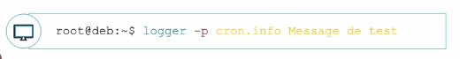
Planification des tâches
Planification utilisateur
crontab –e
Au premier lancement de la commande, Debian vous proposera de choisir l’éditeur de texte a utiliser :
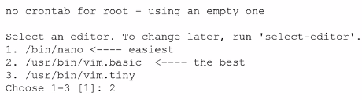
Le fichier crontab est composé de six colonnes :
• Minute : de 0 à 59
• Heure : de 0 à 23
• Jour du mois : de 1 à 31
• Mois : de 1 à 12
• Jour de la semaine : de 0 à 7 (sachant que 0 et 7 représentent dimanche)
• Commande : la commande à exécuter suivant la planification (il est conseillé d’utiliser un script pour des raisons de simplification de suivi des actions).
Il est possible de formater les cinq premières colonnes :
• Avec des listes, en utilisant le caractère « , » :
• Ex. : 1,3,5 dans la colonne des jours de la semaine génèrent une tâche tous les lundis,
mercredis et vendredis
• Avec des intervalles, en utilisant « - » :
• Ex. : 10-20 dans la colonne jours du mois génère une tâche exécutée du 10 au 20
• Avec un joker, en utilisant « * » :
• Ex. : * dans la colonne des heures indique toutes les heures
• Mettre un répétiteur, en utilisant « / » :
• Ex : */2 dans la colonne des mois génère une tâche exécutée en janvier, mars, mai juillet, septembre, novembre
Exemple de configuration :
Planification système
Crontab système
• Cron utilise aussi une table spéciale pour les tâches de planification du système.
• Ces tâches sont déclarées dans le fichier /etc/crontab.
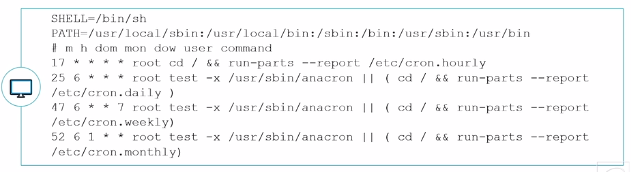
Lancement des tâches non exécutées avec anacron
• Pour comprendre le fonctionnement d’anacron, l’explication suivante va s’appuyer sur le travail : cron.daily.
• Tous les jours, si le système reste allumé 24/24, cron va exécuter cette tâche à 6h25 :

• Cette tâche a pour effet de lancer tous les scripts présents dans le répertoire /etc/cron.daily.
• En regardant dans ce répertoire, on voit qu’il y a un fichier 0anacron. Ce script exécute une simple commande qui est :
anacron –u cron.daily
Gestion de la taille des fichiers de log
• Nativement journald stocke ses logs dans une base de données volatile dans/run/log/journal. Mais il est possible de demander à journald de garder les logs de façon durable. Dans le fichier de configuration de journald /etc/systemd/journald.conf, le paramètre #Storage=auto est commenté donc journald utilise sa valeur par défaut qui est auto.
• Le fait de créer un répertoire /var/log/journal rendra la conservation des logs durable. La taille de la base de données peut par contre vite devenir conséquente sur un système fortement utilisé.
Taille des logs avec Journald
• Par défaut, journald utilisera un maximum de 10% du système de fichier hébergeant /var/log/journald.
• Il est possible de définir la taille maximum utilisée sur le système de fichier de la base de données avec le paramètre SystemMaxUse=. De plus, il est possible de dire que la base de données sera subdivisée en plusieurs fichiers de taille fixe avec le paramètre SystemMaxFileSize=.
• Bien évidement si la décision est prise de garder les logs de journald de façon définitive, il sera peut-être intéressant de stopper rsyslog afin d’éviter les doublons d’information.
Taille des logs avec Logrotate
• Logrotate est un programme exécuté par une tâche cron système tous les jours (et bien sûr géré aussi par anacron) présente dans /etc/cron.daily/logrotate.
• Le fichier de configuration principal /etc/logrotate.conf définit des valeurs de comportement par défaut.
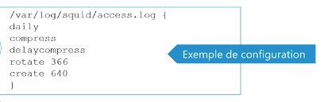
Outils d'analyse du système
• Connaître la version du système
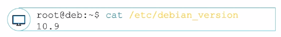
• Connaître la version du noyau Linux actif et son architecture
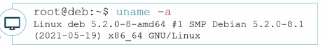
• Connaître le type de CPU
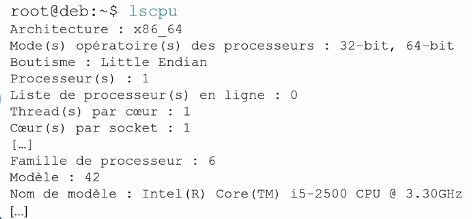
• Lister les informations des matériels PCI
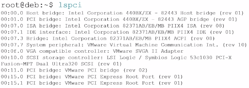
• Lister les périphériques USB

• Lister les informations sur stockage et systèmes de fichiers (commande déjà vue dans les modules précédents)
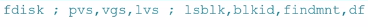
• Lister les informations sur répertoires et fichiers
• La commande du permet de prendre des informations sur la taille utile d’un répertoire.
• La commande ls permet de prendre des informations sur les fichiers.
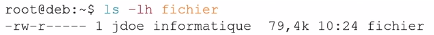
• La commande file permet de connaître la nature d’un fichier.
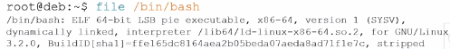
• La commande lsof permet de connaître l'activité des fichiers ouverts dans un répertoire donné.
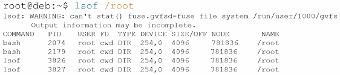
Performances et processus
- Informations en temps réel avec
top
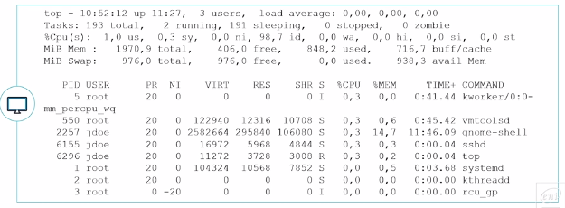
- Informations en temps réel avec
htop(à installer)
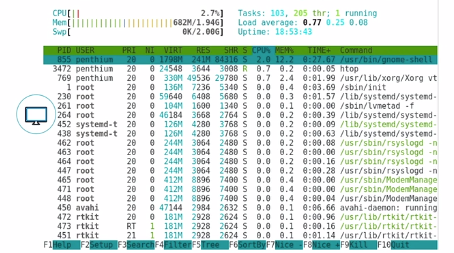
- Informations en temps réel avec
glances(à installer)
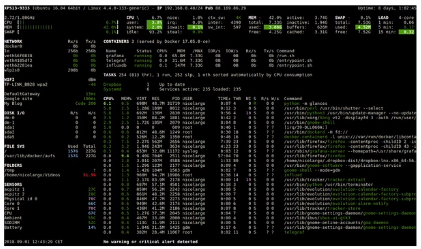
- Lister des processus avec
ps
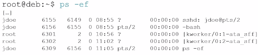
- Informations sur la ram avec
free
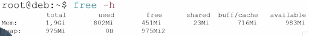